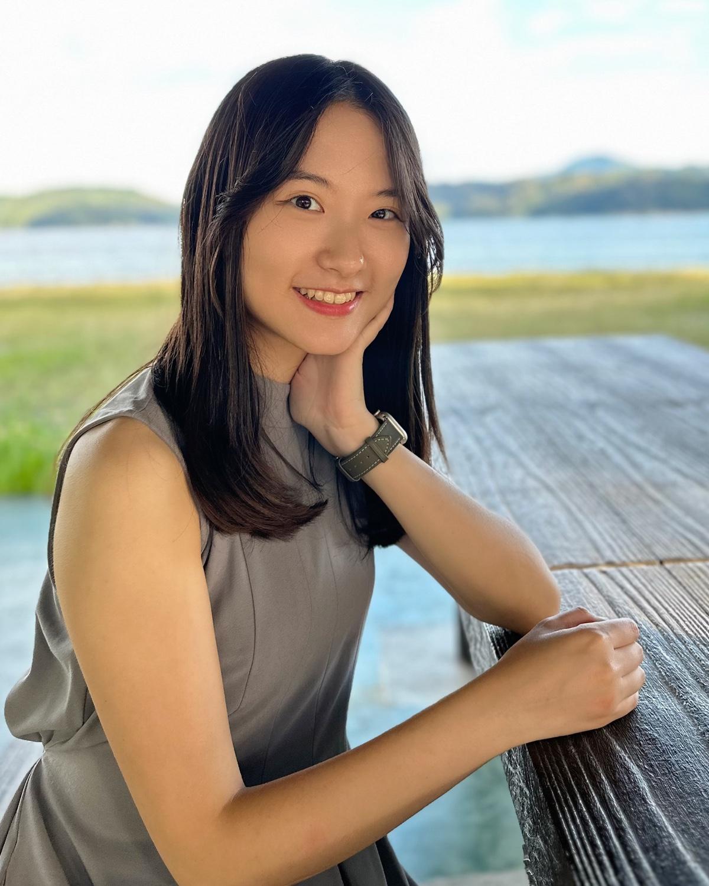
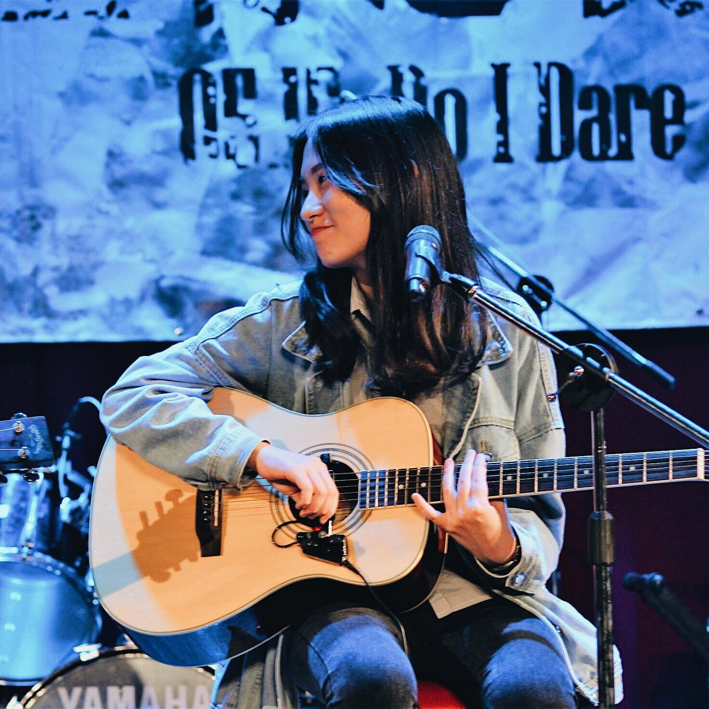
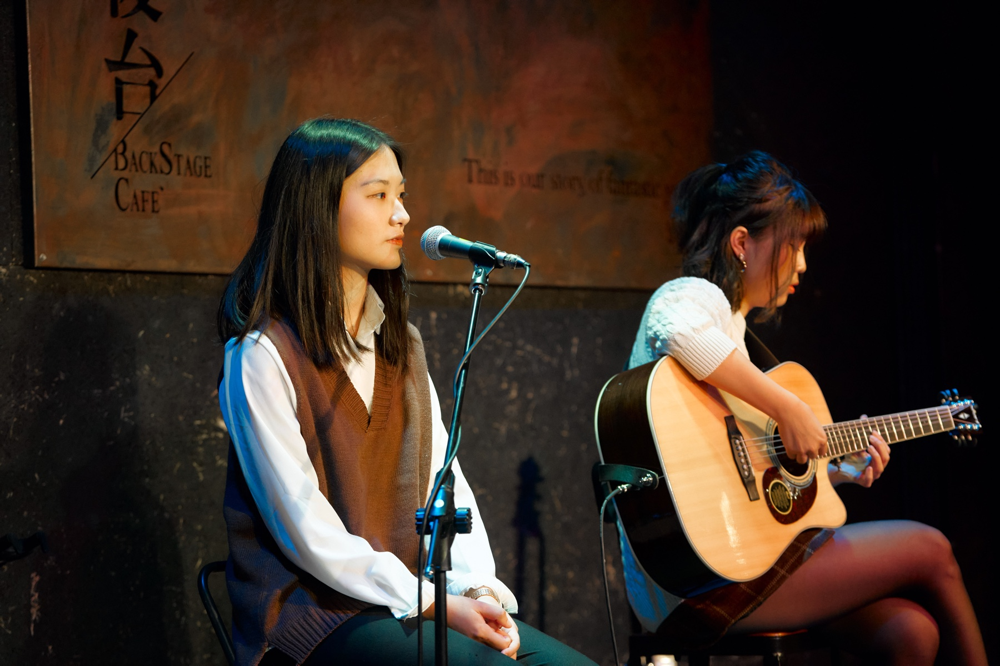
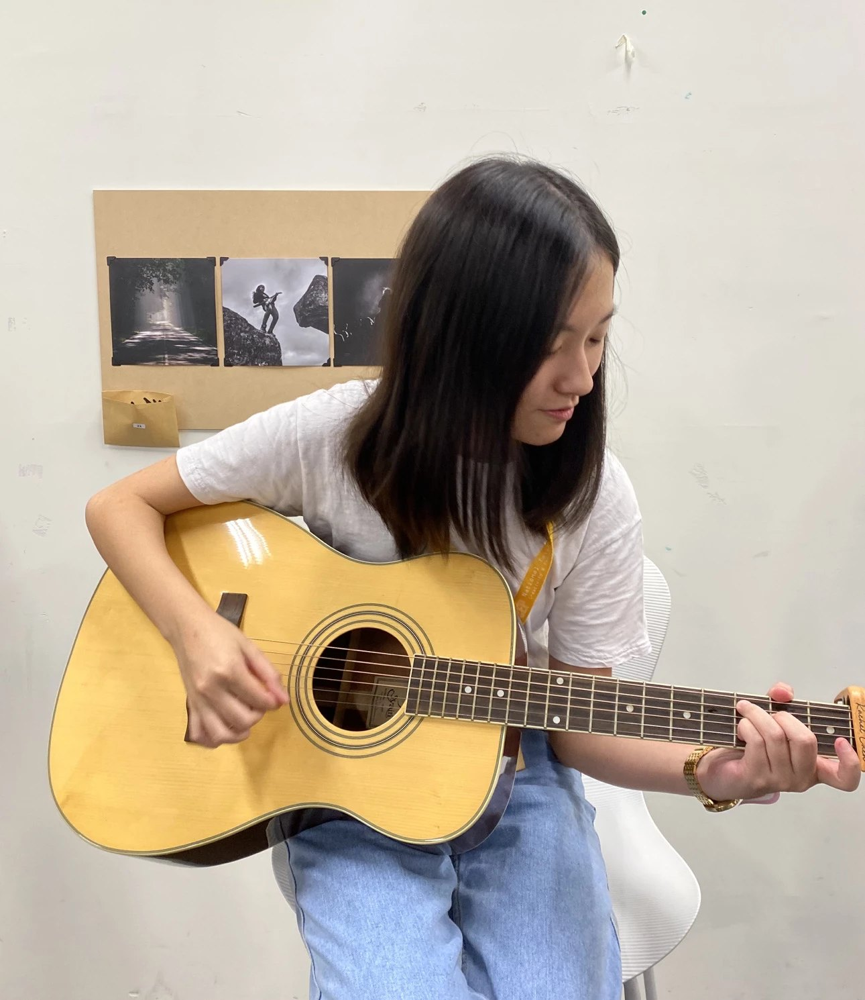
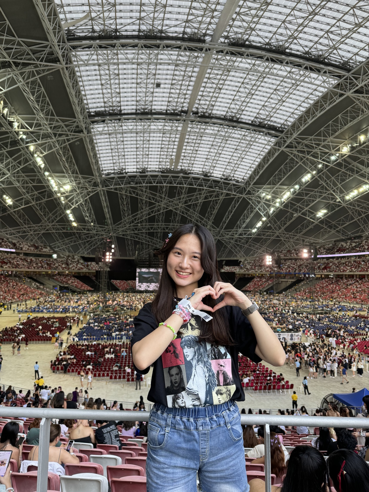
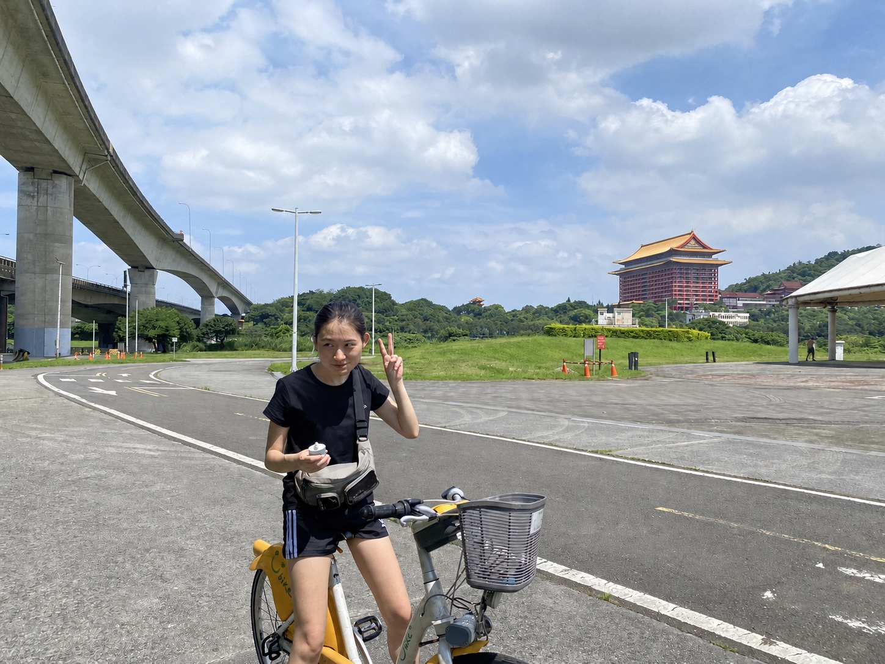

Personal portfolio · TPE
Passport to future

- Holder
- Rachel Chen
- Work
- Technology
consulting
Hi, I’m Rachel.
I follow what I love, and share what I learn along the way.
Passport to future

I follow what I love, and share what I learn along the way.
Three stories about community, personal experience, and performance.



Music, culture, and exploring at my own pace.




